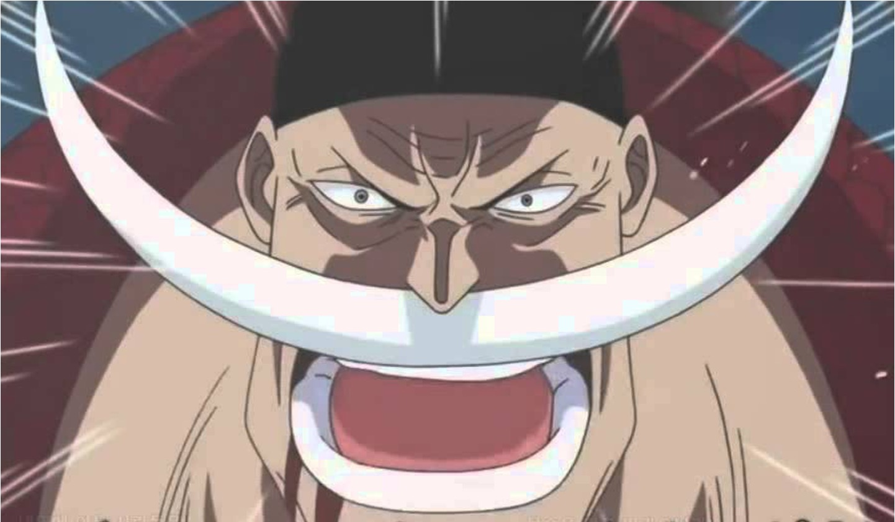

대해적시대 전기 22년의 정점인 동시에 구심점이었던 남자.
포트거스 D 에이스는 지금 이 시대를 부르는 이름은 '흰 수염'이라고 단언했다.
원피스 GREEN에 따르면 대해적시대는 해적왕이 만들고 흰 수염이 엮어낸 시대다.
사황으로 불리기 훨씬 이전부터 해적왕 로저와 호각을 다퉜다.
로저가 죽고 시키가 자취를 감춘 후에는 단연 해적왕에 가장 가까운 해적이자 바다의 제왕으로 군림한 사황의 시작점이 된 인물이기도 하다.
견습 시절 로저 해적단의 배에서 여러 차례 흰 수염과 부딪쳤던 칠무해 버기는 자신의 배에 무임승선한 에이스를 "절대로 공격하면 안 된다!"라고 강조하면서 흰 수염을 확고부동한 최강의 해적, 원피스에 가장 가까운 사나이라고 평가하며 두려워했다. 또한 노블 A에서도 에이스가 스컬을 통해서 정보를 모을 때, 신세계에 알려진 평가에서도 단순한 전투력 및 결투승부는 카이도가 최강이라고 평가를 받고 있었으나, 동시에 흰 수염이 확고부동한 최강의 해적이자 원피스에 가장 가까운 사나이라는 평가를 받는 것으로 나온다.